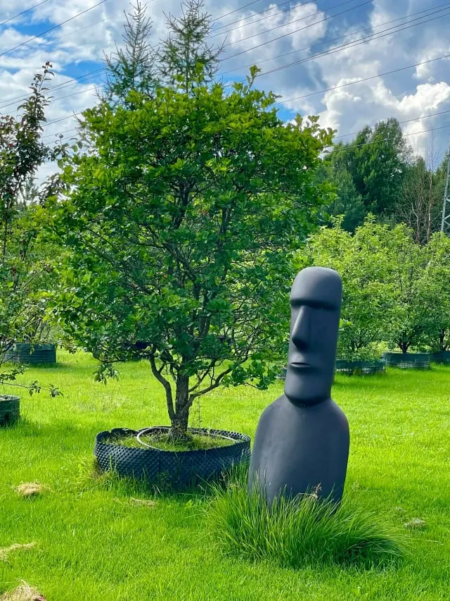

Проект «Руки» · с 2016 года
Портрет
без лица.
Жест, характер и история человека, сохранённые в скульптуре.
Илья Вереск · художник и автор проекта
О проекте
У каждого человека
свой след.
«Руки» — коллекция скульптурных портретов известных современников и возможность сохранить жест близкого человека.

Автор проекта
Илья Вереск
Художник, дизайнер, светодизайнер и галерист из Санкт-Петербурга. Работает на стыке искусства и дизайна, создавая скульптуры, световые объекты и пространства с собственным настроением.
Больше об авторе
Скульптуры на заказ
Форма для вашей
истории.


Люди проекта
57встреч в архиве
2016–2026
Проект растёт
через встречи.
Первый показ — в ночной галерее Ильи Вереска на Рубинштейна, второй — на выставке в Государственном музее спорта. Новые герои и десять лет истории собраны в одном архиве.
Читать историюСледующая история — ваша
Сохраним ваше
прикосновение.
Расскажите об идее. Обсудим композицию, выезд, сроки и стоимость.